持续过载 · full 24画像
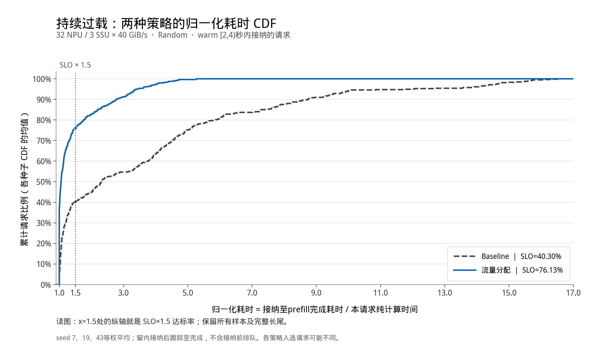


QOS STORAGE SIM · 2026-09-19
完整实验资料总包：保留此前其他实验，near35替换欠载10画像，sensitivity20k_076新增到局部过载。按实验输入区分的原图、结果表与代码。请先阅读 完整核对说明；图中 Once 与“流量分配”是同一原始策略。NEW 前缀为本次从冻结输入补画的混排图。

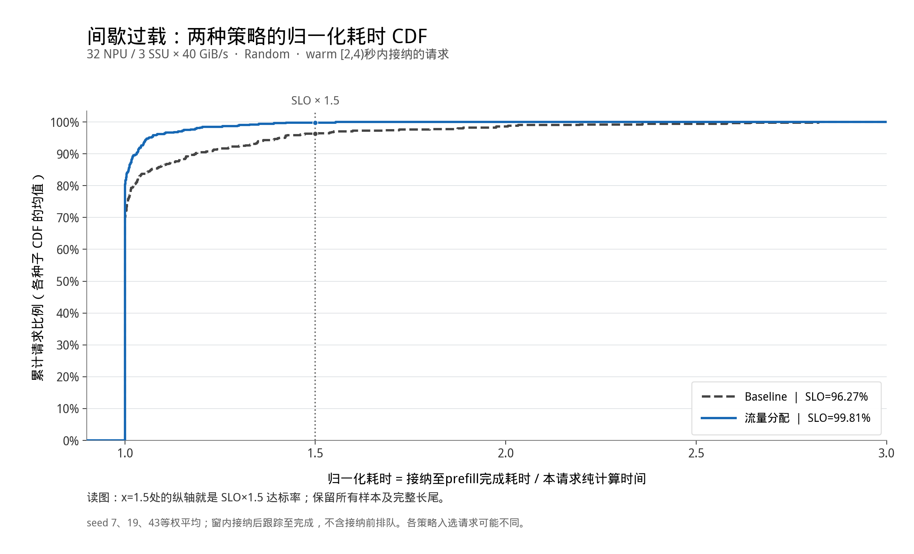


AB实验代码、原始数据与指标入口。9月14日原始sensitivity20k_076；下方三图均来自该实验原包，未重画。按本包分类新增到局部过载；原约束为普通需求欠载、长短请求交界预取豁免。


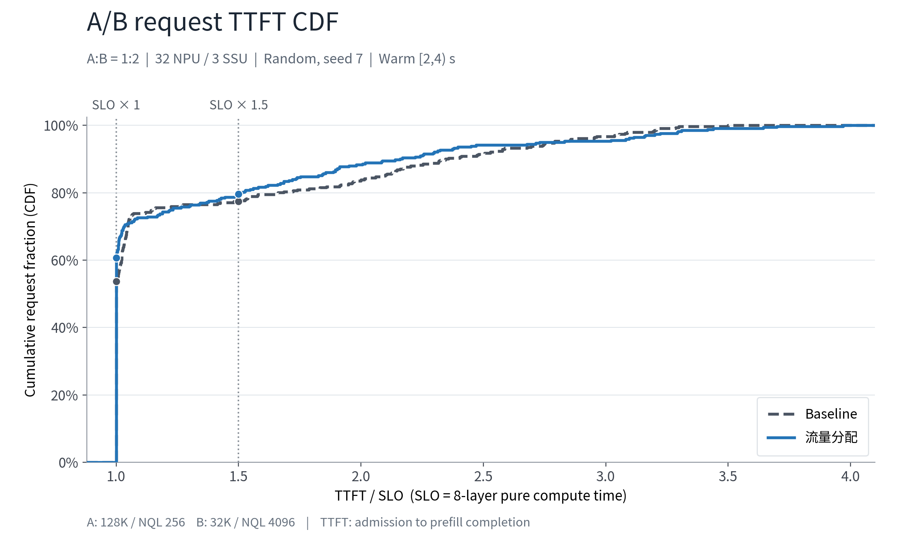


本组替换旧持续欠载10画像随机输入实验。2026-09-16，32 NPU、3 SSU、24画像、每卡42条；平均欠载，允许局部过载。Baseline：NPU 99.25%、SLO×1.5 96.20%；流量分配：99.40%、100%。原报告与类别指标。
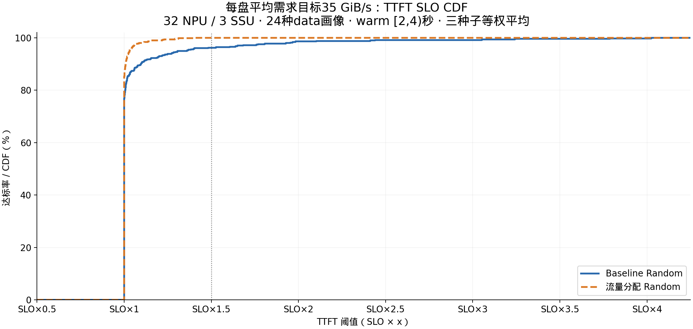


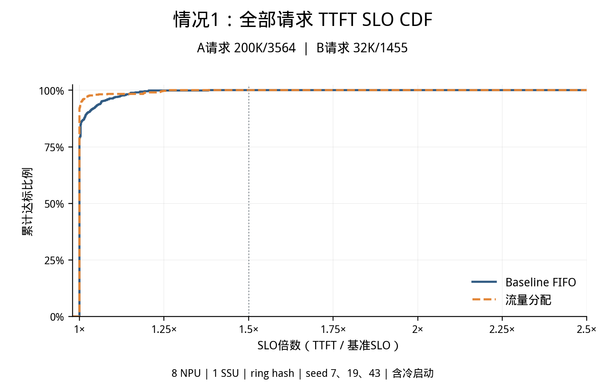
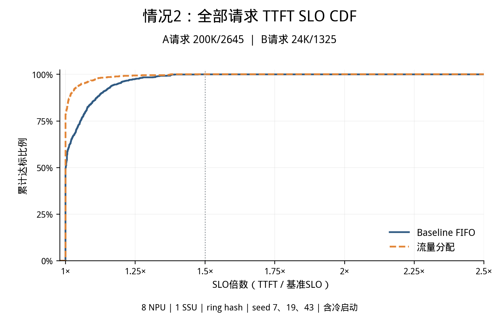
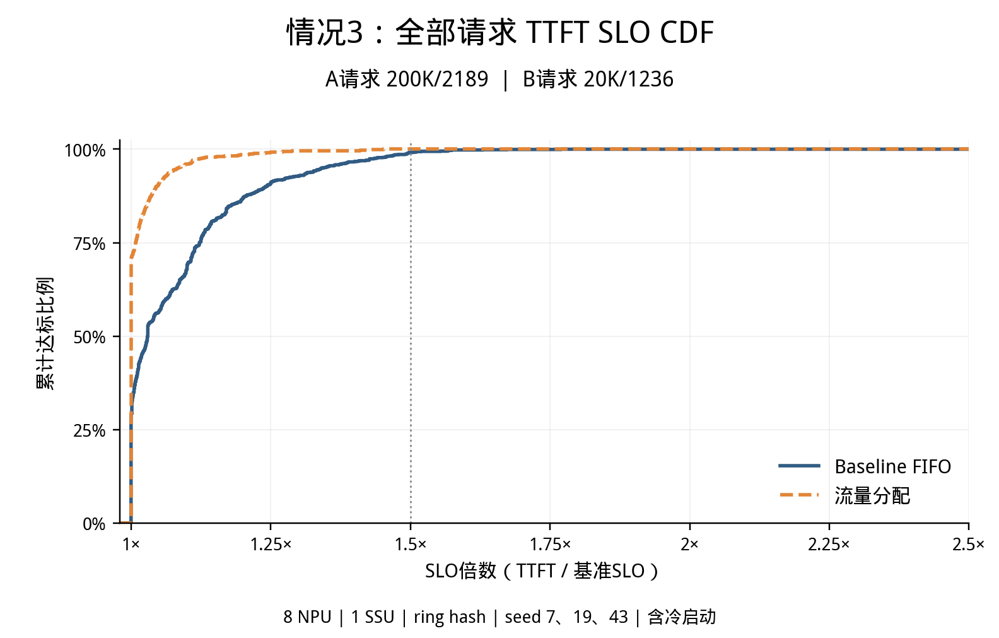
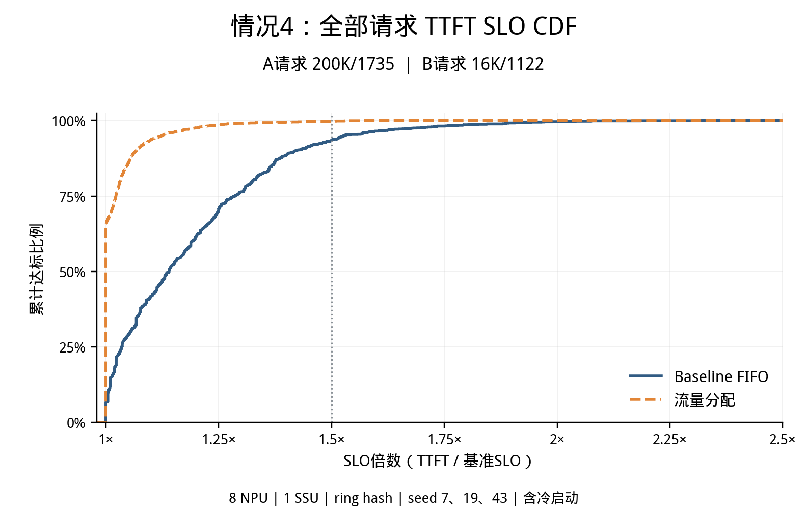
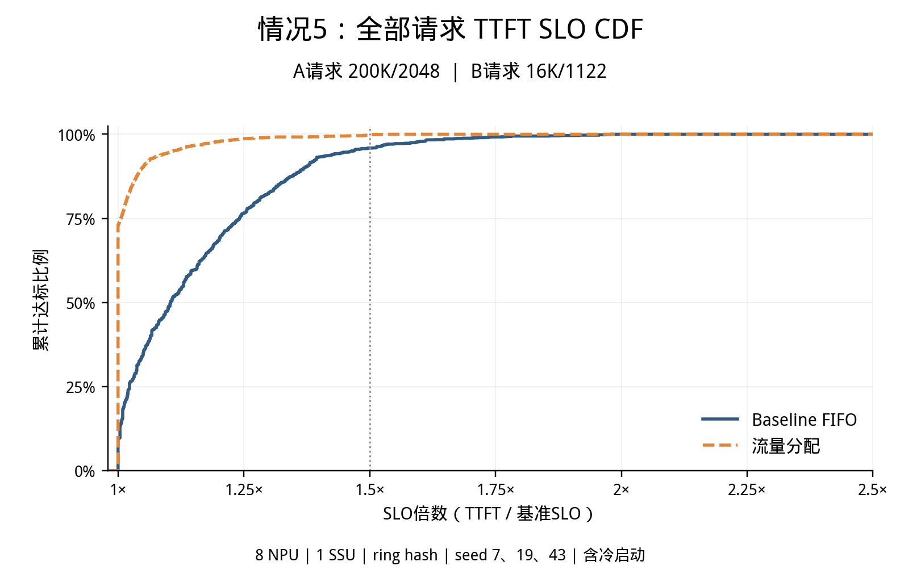
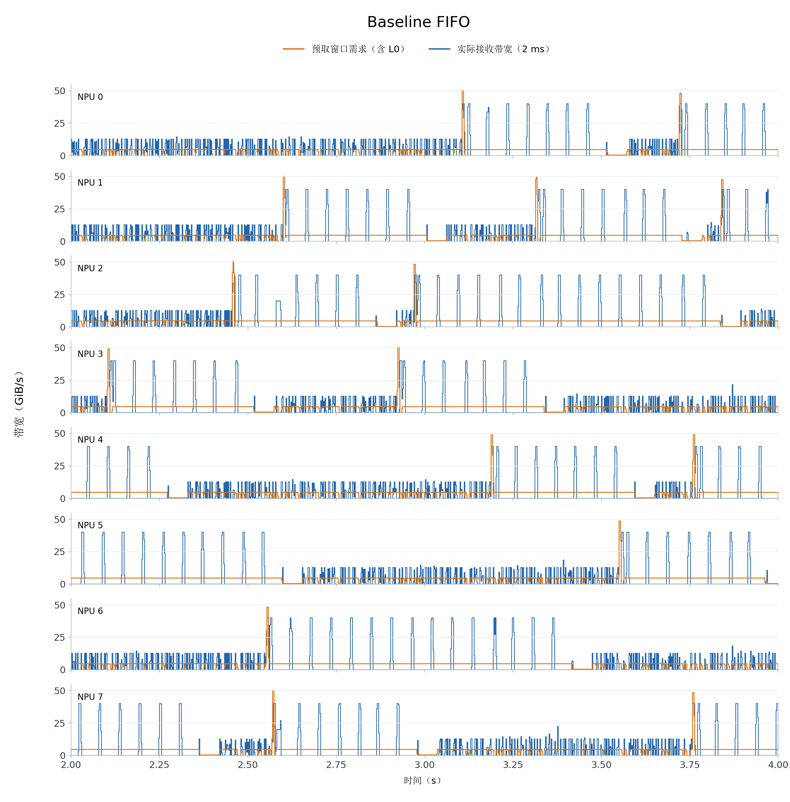
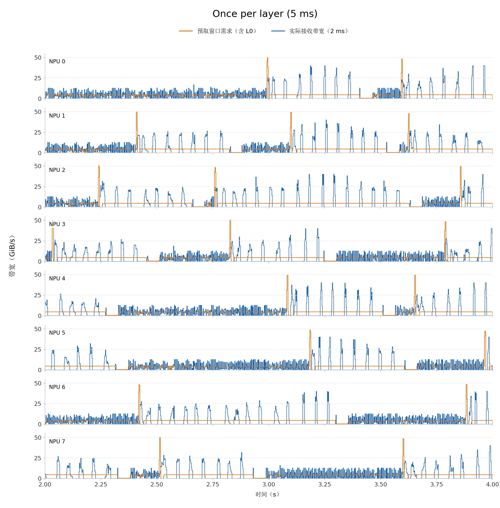
精确参数资料入口：包含32卡4盘随机混排筛选与8卡1盘E1固定分卡两组证据。下方原图包含E1及其他固定/混排组，并非32卡随机筛选的图。
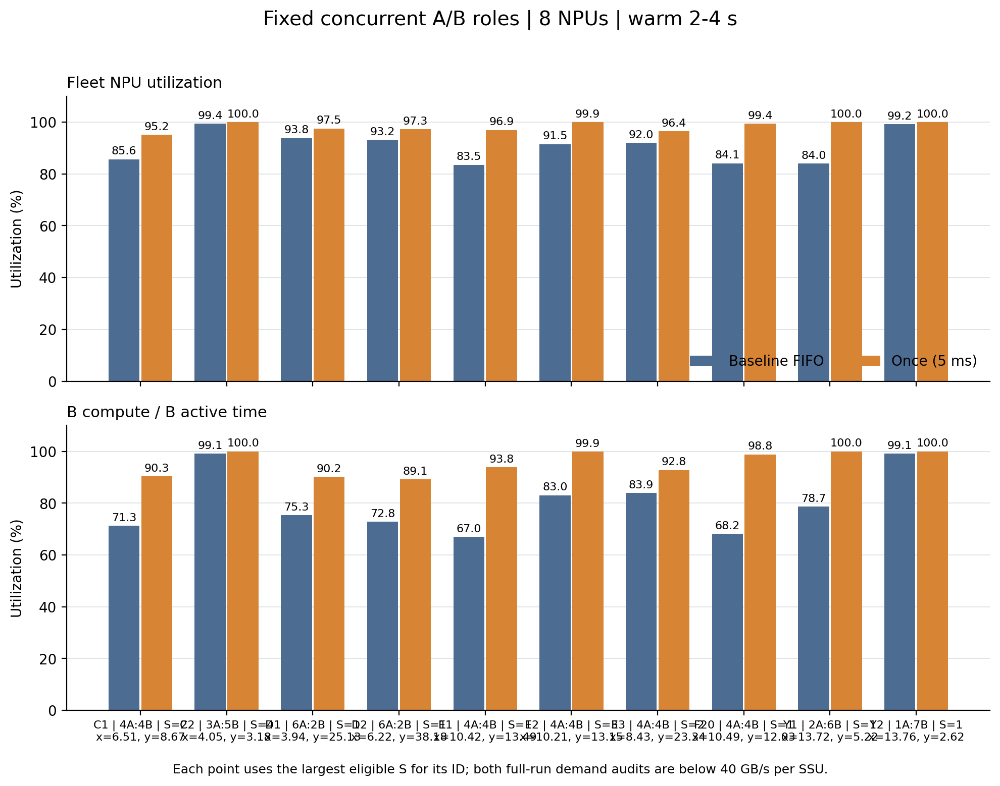
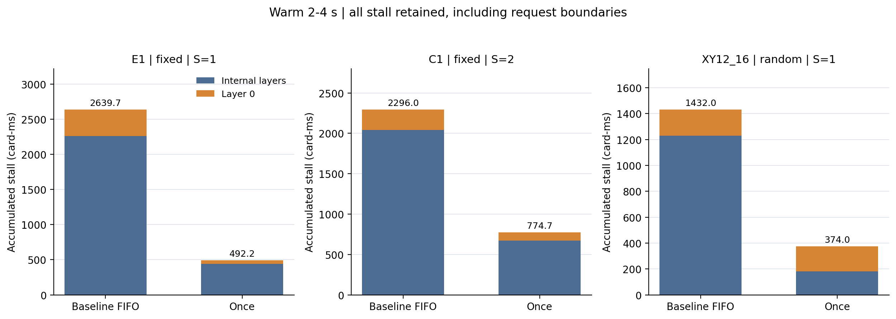